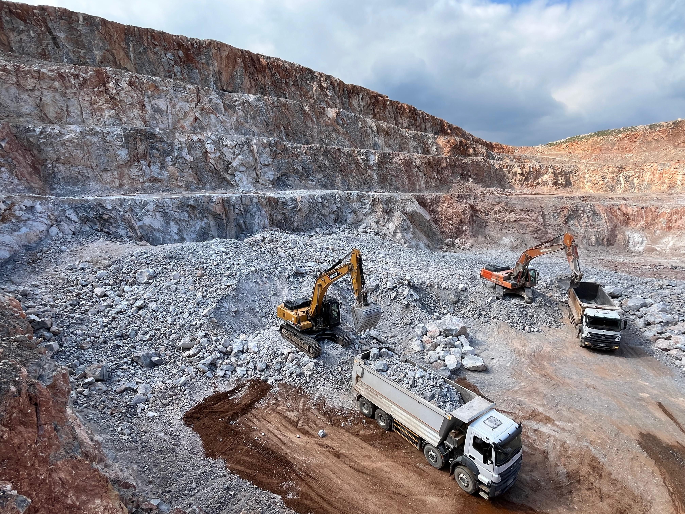
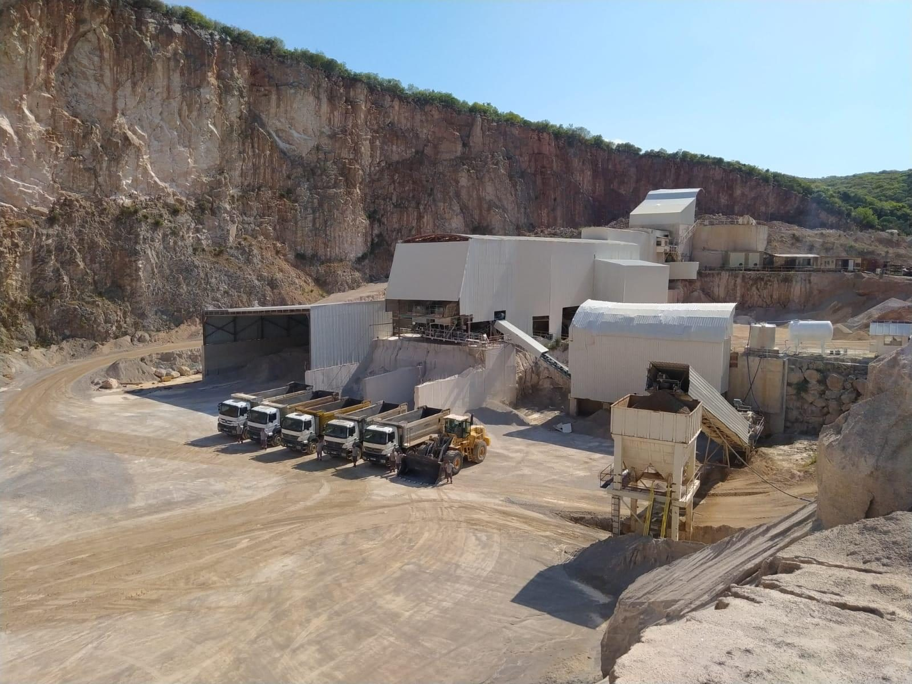
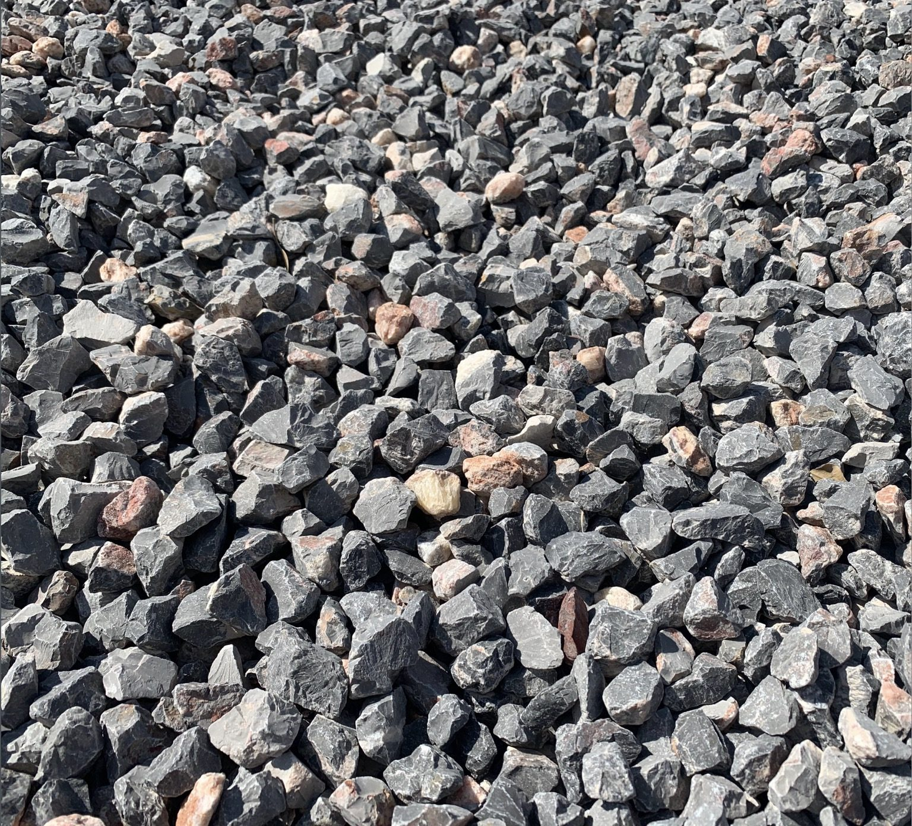
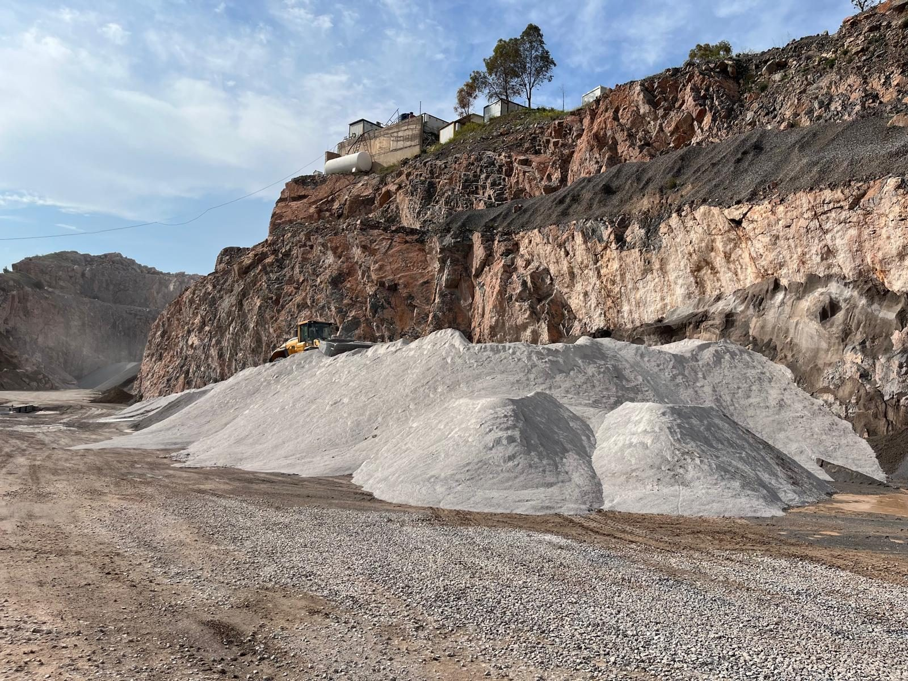

1960Kuruluş
2Aktif Ocak ve Tesis
11.8MTon Yıllık Kapasite
İhracata HazırLojistik ve Liman Erişimi
Üretim Ağı
Bornova ve Urla Ocak Operasyonları
İki aktif üretim tesisi, sürekli tedarik kapasitesi ve Alsancak Limanı ile Aliağa liman altyapısına lojistik erişim avantajı sağlar.
- Bornova kapasitesi
- 750 ton/saat
- Urla kapasitesi
- 600 ton/saat
- Toplam yıllık kapasite
- 11,826,000 ton/yıl


Ürün Gamı
Agrega Ürünleri ve Fraksiyonlar
Proje gereksinimlerine göre özel fraksiyonlarda üretim yapılabilir.
| Ürün | Ölçü / Fraksiyon |
|---|---|
| Mıcır Tozu | 0-3 mm |
| İnce Agrega | 0-5 mm |
| Kırmataş | 5-12 mm |
| Kırmataş | 12-22 mm |
| Dolgu Taşı | 20-70 mm |
| Kireçtaşı | Proje talebine göre |
| Duvar Taşı | Proje talebine göre |
| Anroşman Taşı | Proje talebine göre |
Limanlar ve Lojistik
İzmir İhracat Limanlarına Stratejik Erişim
Bornova tesisi İnönü Mahallesi 9501 Sokak No:22, 35040 Bornova, İzmir adresindedir. Bornova ve Urla tesislerinden Alsancak Limanı ve Aliağa liman altyapısına uluslararası sevkiyat planlaması için nakliye yapılabilir.
- Alsancak Limanı’na karayolu erişimi
- Aliağa liman altyapısına karayolu erişimi
- Toplu tedarik ve proje bazlı lojistik planlama
- İhracata uygun agrega, kırmataş ve anroşman taşı üretimi

İhracat Tedarik Bilgisi Alın
Agrega teknik özellikleri, mevcut fraksiyonlar, üretim kapasitesi ve İzmir’den lojistik planlama için Bemaş ile iletişime geçin.
info@bemasagrega.com